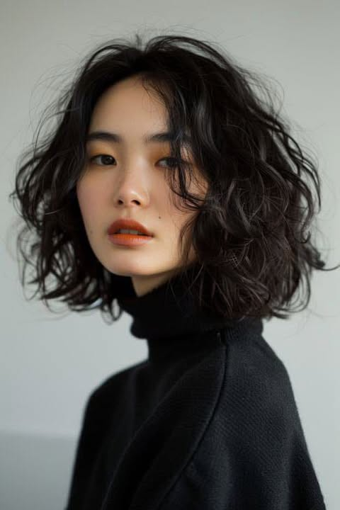
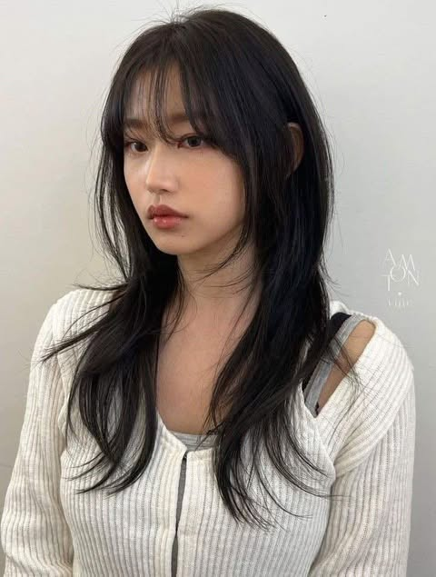
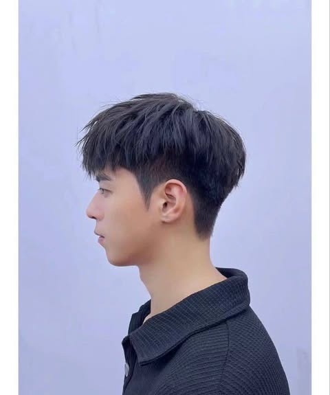
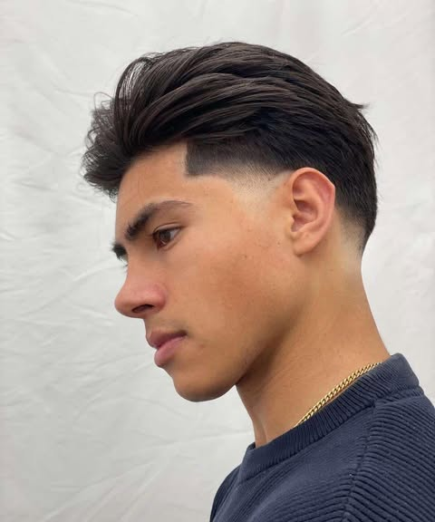
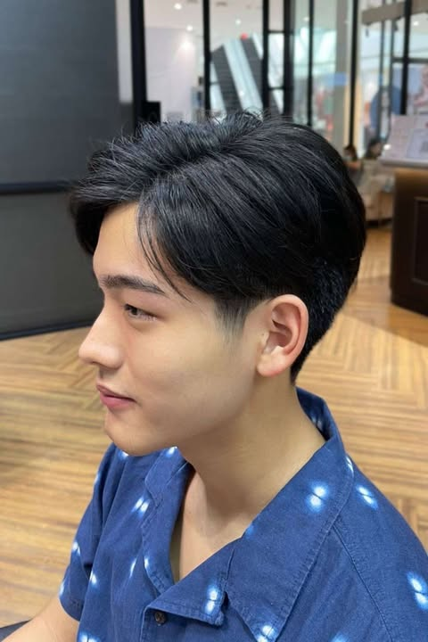

1)ผมสั้นดัดลอนเพิ่มวอลลุ่ม
คนหน้าเหลี่ยมควรเลือกทำทรงผมสั้นที่ดัดลอนร่วมด้วย หรือใช้วิธีการไล่เลเยอร์ผมให้ดูมีวอลลุ่ม ลอนผมจะช่วยทำให้ใบหน้าของเราดูซอฟต์สวยละมุนมากยิ่งขึ้น
2)บ๊อบประบ่า
บ๊อบสั้นประบ่า ซอยไล่สเต็ปช่วงปลายผมให้เนื้อผมบางลงดูมีเลเยอร์ ช่วยลดความคมของเส้นกรอบใบหน้าเหลี่ยมโหนกแก้มสูง เลเยอร์ของปลายผมบ็อบทิ้งตัวฟรีโฟลว์ ทำให้ผมดูมีวอลลุ่มสลวย เส้นผมคลอเคลียข้างโหนกแก้มสูง ปรับลุคดูนุ่มนวลขึ้นด้วย

3)ทรงผมสั้นประบ่าสไตล์ Wolf Cut สำหรับผู้หญิง
จะเป็นเลเยอร์ที่มีความชัด ช่วงบนจะซอยสั้นๆ เพื่อให้ผมดูพองมีวอลลุ่ม แล้วตัดสไลด์ลงมาจนถึงระดับบ่า

4)ทรงรองทรงสูง
เป็นทรงที่สามารถจัดแต่งทรงด้านบนให้เอียงไปทางซ้าย ขวา หรือแม้กระทั่งโหลดไปด้านหลัง และทำให้ตั้งขึ้นได้ตามต้องการ เพราะทรงนี้ทำได้ทุกสไตล์ ยังคงให้ความเท่เสมอ เหมาะอย่างยิ่งสำหรับผู้ชายที่มีใบหน้าที่มีแก้มที่เด่นชัด

5) ทรง Slick Back
ทรงที่ไว้ผมด้านหน้ายาวกว่าผมด้านข้าง โดยจัดแต่งทรง ผมด้านบนจะจัดแต่งให้สูงขึ้นเล็กน้อย เป็นรองทรงสูงเปิดข้างวินเทจ ที่ให้ลุคดูเรียบหรูและเป็นธรรมชาติ ลุคนี้สะท้อนถึงสไตล์สุภาพบุรุษชาวอเมริกันที่ดูดี

6)รองทรงต่ํา
เป็นสไตล์คลาสสิกและเหนือกาลเวลา ที่เกี่ยวข้องกับการตัดผมโดยใช้ฐานผมที่ต่ำกว่าติ่งหู ด้านล่างถูกเล็มให้สั้นลงเล็กน้อย จึงเหมาะสำหรับผู้ที่มีผมหนาปานกลาง